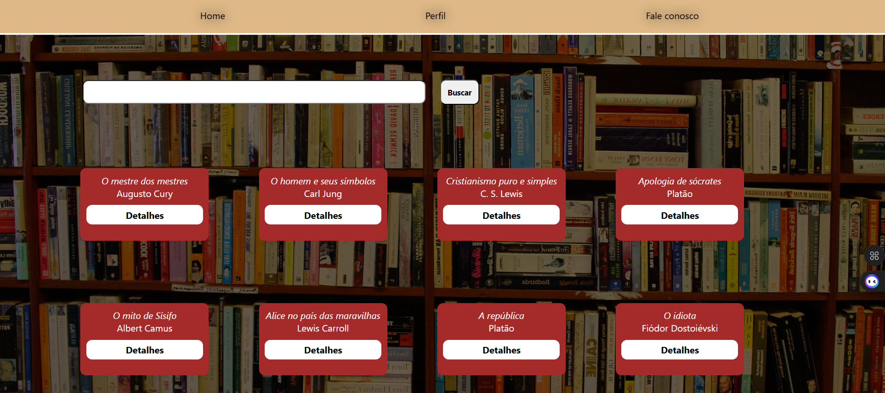
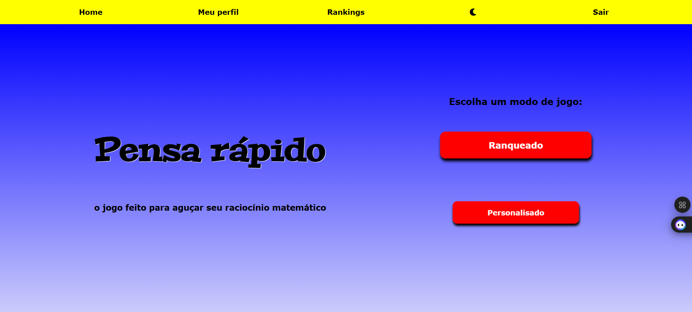
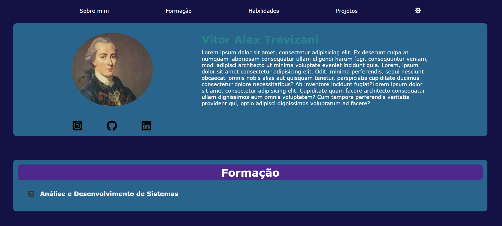

Sobre mim
Opa! Me chamo vitor alex trevizani, Sou estudante de Análise e Desenvolvimento de Sistemas, com foco no desenvolvimento web. Minha especialidade é construir APIs em HTML, CSS e JavaScript com node.js, me preocupando com separação de responsabilidades entre as partes do código(modularização) e cumprimento dos padrões REST para a construção de APIs. Gosto de entender como as tecnologias funcionam internamente e transformar esse conhecimento em projetos práticos. Atualmente venho aprofundando meus estudos em arquitetura de software, computação em nuvem da AWS e boas práticas de programação, buscando evoluir continuamente como desenvolvedor. Também gosto de ler nas horas vagas.
Formação
Análise e Desenvolvimento de Sistemas
Instituição: UNIUBE
Situação: Em andamento
Habilidades
Linguagens para a web
HTML
Linguagem de marcação para página web. tenho um bom domínio do html e me preocupo com legibilidade e semântica
CSS
CSS é uma liguagem de estilização muito vasta, e posso dizer que meu conhecimento é intermediário. Domino a maior parte dos principais atributos de estilo, animações simples com keyframes, psedoclasses, flex e grid
Java Script
domino os recursos básicos da linguagem, além de manipulações do DOM, classes, programação assíncrona e event loop.
Bancos de dados
Postgres
Um dos principais bancos de dados relacionais do mercado. Entendo os relacionamentos entre tabelas, o básico de modelagem e as principais técnicas e comandos para consulta. Sei fazer com ele se comunique com aplicações por meio da ORM Prisma, tranferindo dados de forma segura
Mongo DB
O principal banco de dados não-relacional do mercado. Possuo conhecimento básico de modelagem e as principais técnicas e comandos para consulta. Faço a a implementação do modelo na aplicação, integrando ele muito bem com node.js por meio do Mogoose
Tecnologias modernas para a web
Node.js
Através do node.js, construo aplicações full-stack utilizando apenas HTML, CSS E JavaScript, tenho acesso a milhares de bibliotecas e framaworks do JavaScript que auxiliam na construção de servidores, autenticação, segurança dos dados.
Express
Com o express, construo servidores que sustentam sua aplicação. Para isso, adquiri domínio sobre os verbos HTTP, construção de rotas, e manipulação de requests e responses(seguindo nesse último, no caso de uma API, os padrões REST)
Bcrypt
O Bcrypt é uma biblioteca javaScript que me permitirá deixar as suas senhas muito mais seguras. Antes de salvar a senha no banco de dados, o Bcrypt a transforma em um código INDECIFRÁVEL, porém comparável com os outros códigos desse tipo, o que possibilitao processo de autenticação.
JWT
Com o JWT, implemento a autenticação nas aplicações de forma moderna.
Prisma
O Prisma é uma ORM moderna para Node.js e TypeScript que oferece acesso seguro e eficiente a bancos de dados como PostgreSQL, MySQL, SQLite, SQL Server e MongoDB. Mais segurança nos dados O Prisma ajuda a evitar erros que poderiam causar falhas ou inconsistências no banco, garante agilidade no desenvolvimento, facilidade de manutenção e escalabilidade garantida. Além disso, o Prisma oferece uma interface gráfica para explorar informações do banco. Isso facilita auditorias, testes e acompanhamento sem depender de relatórios complexos.
Mongoose
Mongoose é uma biblioteca que facilita a interação com o banco de dados Mongo DB. Ela permite criação de schemas ágil e funciona muito bem com aplicações Node.js.
Conhecimentos e Habilidades úteis
Inglês
Meu nível de inglês está entre básico e intermediário. Consigo ler textos e livros simples.
Excel
Com excel, posso fazer limpeza de dados, criação de tabelas e dashboards para análise com gráficos e filtros. Também desenvolvo macros simples e domino comandos essenciais relacionados às operações básicas, estatíticas, pesquisas condicionais, PROCV e PROCX, data e hora.
Projetos

Simulador de biblioteca virtual
Iniciei esse projeto para aperfeiçoar minhas Habilidades citadas acima. O projeto foi construído de forma que o back-end se encontra separado do front-end, e esse último se comunica com o primeiro via API. É uma aplicação monolítica com arquitetura em camadas. A ideia central dessa aplicação web é simular virtualmente a interação com uma biblioteca: pegamos livros emprestados, lemos, devolvemos, etc. Para isso, utilizei o Prisma juntamente com o PostgreSQL para modelar e armazenar os dados gerados pela aplicação. Utilizei Express para criar o servidor, Bcrypt para segurança dos dados sensíveis e JWT para autenticação. Há três níveis de usuário: usuário comum, adminstrados e banido. Em relação às quastões arquiteturais, o projeto foi devidamente separado em componentes, separando as rotas dos services(regras de negócio), de forma que se comunicam por meio do controllers. Também desenvolvi middlewares para auxiliar na autenticação e verificação de permições, além de testes unitários com vitest e documentação das rotas com Swagger. O projeto foi desenvolvido utilizando TypeScript. No lado front-end, utlizei HTML, CSS e JavaScript puro. É através desse último que o usuário navega entre as páginas e se comunica com a API por meio da função 'fetch'.
Veja esse projeto no github:

Pensa rápido - o jogo matemático
Foi a primeira aplicação em node.js que desenvolvi, e muitas das tecnologias que utilizei para isso não são usadas em meus projetos recentes para fins de maior agilidade e melhor arquitetura. Esse projeto foi criado com fins educacionais com o intuito aperfeiçoar a inteligência lógico-matemática de alguns familiares. Ele foi construído de forma que o front-end é dependente do back-end, e esse último manipula e passa variáveis para o primeiro por meio da template engine Handlebars. É uma aplicação monolítica com arquitetura MVC(Model-View-Controller). A aplicação é um jogo que mostra na tela uma conta de adição e algumas alternativas. O usuário deverá clicar na alternativa correta com um limite de tempo. O jogador possui um número de tentativas, e o jogo acaba após ele esgotá-las. Antes de iniciar o jogo, a aplicação pedirá ao jogador para escolher um nível de dificuldade, que altera a quantidade de tempo disponível para responder cada rodada e o tamanho dos números envolvidos na conta. Futuramente, pretendo melhorar as regras do jogo e adicionar mais operações (como subtração, multiplicação e divisão) e números decimais. Utilizei o Mongoose juntamente com o Mongo DB para modelar e armazenar os dados gerados pela aplicação. Utilizei Express para criar o servidor, Bcrypt para segurança dos dados sensíveis e Passport para autenticação. Há três níveis de usuário. Desenvolvi testes unitários com Jest. A aplicação também possui outras funcionalidades focadas na experiência do usuário: fotos de perfil animadas, rankings globais para cada nível de dificuldade

Este portifólio
Este portifólio foi desenvolvido inteiramente por mim, utilizando HTML, CSS e JavaScript. Separei em sections no HTML cada conjunto de principais informacoes que um portifólio razoável deve conter. Além de estilizar a página, utilizei o css para criar animações e movimentos para os elementos. Através do JavaScript, a página permite ao usuário alternar entre modo claro e modo escuro através de um botão do menu no topo da página. Ainda no menu, Há atalhos para as sessões da página. Por meio do JavaScript, também deixei os cards da sessão "Habilidades" com uma parte traseira, ou seja, ao clicar em um deles, ele fará uma animação e mostrará a parte traseira, que contém informações sobre a respectiva habilidade e o meu nível de domínio sobre a mesma. Na sessão de projetos, os projetos e sua descrição são mostrados em formato de carrossel.